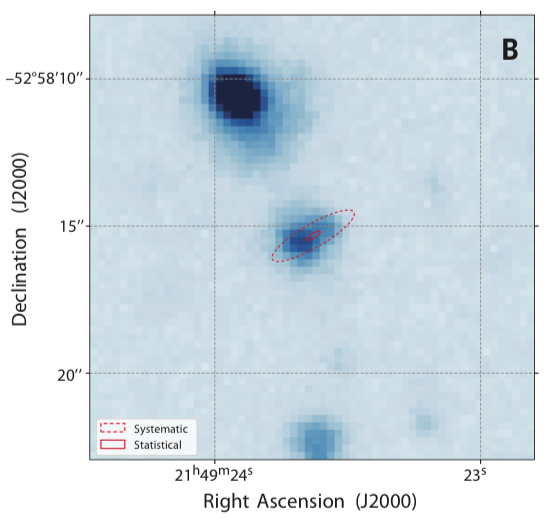

FRB 181112
Image from Prochaska et al., 2019, Science, 366, 231
Summary
- Detected by: ASKAP-ICS
- FRB coordinates (RA, Dec): 21:49:23.63 −52:58:15.3 (J2000)
- Host coordinates (RA, Dec): 21:49:23.68 -52:85:15.4 (J2000)
- Redshift: 0.4755
- Observed DM: 589.27 pc cm-3
- Repeating: No
- References: 2019Sci...366..231P;
2020ApJ...895L..37B